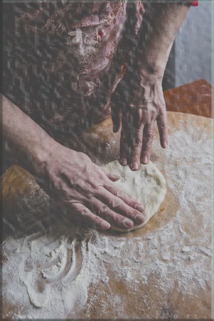

what is dough?
Dough..
Dough is a thick, malleable, sometimes elastic paste made from grains or from leguminous or chestnut crops. Dough is typically made by mixing flour with a small amount of water or other liquid and sometimes includes yeast or other leavening agents, as well as ingredients such as fats or flavorings.
The making and shaping dough begins the preparation of a wide variety of foodstuffs, particularly breads and bread-based items, but also including biscuits, cakes, cookies, dumplings, flatbreads, noodles, pasta, pastry, piecrusts and our favorite pizza.
Dough can be made from a wide variety of flour, commonly wheat and rye but also maize, rice, legumes, almonds, and other cereals or crops.
PIZZADOUGH
The best pizza dough is this one: U need water, salt, yeast, flour. When calculating your own recipe, it’s best to stick to the percentages below. These are the ratios used by the Associazione Verace Pizza Napoletana, which safeguards the original recipe for Neapolitan dough.
And if you would like to calculate yo your own measurements, go here: pizzadoughcalculator
NY style dough, which really is classic pizza dough that is stretched out into a thin crust pizza. This type of pizza dough contains water, flour, salt, instant yeast, and olive oilAfter it is mixed, it is proofed (left to rise/ferment) in the refrigerator for a minimum of 24 hours and up to 72 hours (it can also be frozen) – this is the big secret.

Enough dough!
Tomatoes, mozzarella, basil.
Thin foldable crust
Baked in a pan.